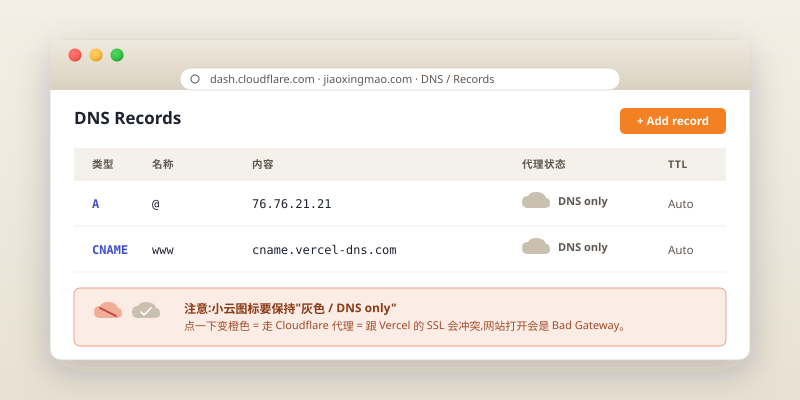

域名:给页面一个家
上一章你拿到的 my-product-site.vercel.app 已经很好用了,但还差一点"真实感"。这一章我们花十几块钱、十几分钟,让你的网址变成 https://你的产品名.com——发名片、发朋友圈、说出口都体面。
jiaoxingmao.com),绑定到上一章的 Vercel 网站,自动启用 HTTPS。年费约 80–120 元人民币起(取决于后缀)。耗时约 30 分钟,主要花在等 DNS 生效。
第一步 · 域名到底是什么
把网站想象成你的小店,域名就是这家店的招牌。my-product-site.vercel.app 像是 Vercel 给你分配的一个商场柜台编号 "B-2105",能用,但客户不好记;jiaoxingmao.com 就是你自己挂上去的招牌。
域名分前缀和后缀(技术上叫"二级域名 + 顶级域名"),后缀决定了价格:
- .com / .net / .org:经典款,适合任何用途。.com 年费 60–80 元起,任何品牌都不会出错
- .app / .dev / .io:科技/产品味,适合 SaaS、App。年费 100–180 元起
- .me / .so / .xyz:个人/创意项目,价格便宜。.xyz 第一年低至 10 元
- .cn:中国后缀,必须实名认证 + 备案才能解析,本教程不推荐——除非你愿意花两周走流程
第二步 · 在哪里买?
这件事比你想象的更影响整个体验。本教程的强推荐是 Cloudflare Registrar,其他选项排序如下:
| 注册商 | 推荐度 | 原因 |
|---|---|---|
| Cloudflare Registrar | 极力推荐 | 成本价销售(不赚差价)、自带顶级 DNS、不强推附加服务、无续费陷阱 |
| Namecheap | 可选 | 界面对新手友好,价格中等,偶有促销 |
| Porkbun | 可选 | 价格透明,DNS 管理好用 |
| GoDaddy | 不推荐 | 首年低价、续费翻倍,而且会卖给你一堆没用的附加服务 |
| 阿里云 / 腾讯云 | 劝退 | 会引导你走备案流程,卡 2-4 周。除非你确定要做面向国内的合规产品,否则千万绕开 |
"备案"是中国大陆要求使用大陆服务器的网站完成的工业和信息化部审核流程,需要提供身份证、人脸识别、网站说明,审核 2-4 周。关键:只有当你把网站托管在大陆服务器上时,才需要备案。
我们的网站托管在 Vercel(美国/全球节点),即使绑定一个 .com 域名,也不需要备案就能在国内访问。只要域名注册商不在大陆(比如 Cloudflare 在美国),整个流程零阻力。
如果你买的是大陆注册商的域名,他们会强制要求你备案才能"解析"——这就是为什么我们绕开它。
第三步 · 在 Cloudflare 买一个域名
1. 注册 Cloudflare 账号
打开 dash.cloudflare.com/sign-up,用邮箱注册,验证。
2. 搜索域名
登录后,左侧导航点 Domain Registration → Register Domains。在搜索框里输入你想要的域名(不带后缀),回车。
Cloudflare 会列出可用的所有后缀和价格(以美元计)。挑一个你喜欢的。不要犹豫太久——好域名通常 5 分钟内就被别人抢了。
3. 结账
把域名加到购物车,选 1 year(后续可以续),填写信用卡或 PayPal 完成付款。
Cloudflare 接受国际 Visa / Mastercard、PayPal。国内储蓄卡可能不支持,信用卡需要开通"境外支付"。如果你没有可用的国际卡,可以用 Namecheap 作为备选(支持支付宝)。
付款完成后,Cloudflare 会发邮件确认。它会自动把这个域名加到你的 Cloudflare 账号下,并把 DNS 也托管在 Cloudflare 上——这正是我们想要的。
第四步 · 把域名绑定到 Vercel 网站
这一步实际只需要在 Vercel 和 Cloudflare 各做几次点击。
1. 在 Vercel 添加域名
进 Vercel Dashboard,点开你的 my-product-site 项目,左侧导航 Settings → Domains。在输入框里填上你刚买的域名,比如 jiaoxingmao.com,点 Add。
Vercel 会给你两个 DNS 配置项,大致长这样:
类型: A 名称: @ 值: 76.76.21.21 类型: CNAME 名称: www 值: cname.vercel-dns.com
把这两条记录截图或者保留这个窗口,我们要拿去 Cloudflare 填。
2. 在 Cloudflare 配 DNS
回到 Cloudflare,左侧 Websites 里点你的域名,进入它的管理页。左侧选 DNS → Records。
点 Add record,按 Vercel 给你的配置填两条记录:
- 第一条:Type = A,Name = @,IPv4 address = 76.76.21.21,Proxy status = DNS only(关闭"代理"那个小橙云)
- 第二条:Type = CNAME,Name = www,Target = cname.vercel-dns.com,Proxy status = DNS only

Cloudflare 默认会让你的 DNS 走它的代理(那个橙色小云图标)。这一步先把它关掉(变成灰色),只让 Cloudflare 做纯 DNS 解析。如果开着代理,跟 Vercel 的 SSL 协商会出问题,你的网站会变成一个"Bad Gateway"红色错误。
等域名能正常访问之后,如果你想要更快的访问体验,可以再考虑开启代理——但需要做一些额外配置,本章不展开。
3. 等待 DNS 生效
填完两条记录,回到 Vercel 的 Domains 页面。它会显示 Pending(等待中),几秒到几十分钟后会自动变成 Valid Configuration(配置有效)。
这段等待时间叫做 DNS 传播(DNS propagation):全球的 DNS 服务器要一段时间才能知道"这个域名指到这台服务器了"。绝大多数情况下 1-10 分钟搞定,偶尔需要 30 分钟,极端情况会到 24 小时(但这种很罕见)。
4. HTTPS 自动启用
不需要你做任何事。一旦 DNS 生效,Vercel 会自动通过 Let's Encrypt 申请一张 SSL 证书,把你的域名升级到 https://。整个过程零成本、零配置。
打开你的浏览器,访问 https://你的域名.com。如果看到你的网站,而且地址栏左边有一个绿色的锁形图标——恭喜,大功告成。
第五步 · 验证一下
关掉浏览器所有标签页,重新打开,试这几个地址,应该都能打开同一个网站:
https://你的域名.comhttps://www.你的域名.comhttp://你的域名.com(应该自动跳转到 https)- 原本的
https://my-product-site.vercel.app(它仍然可用)
三章前你还在装 Node.js,现在你拥有了一个属于自己的、随时能改、自动更新、有 HTTPS、能让任何人访问的网站。这就是 2026 年零基础造产品的实际感受。
动手试试
这件事意外地重要——它让你的"产品有了门面"这件事变得真实。
- 把你的新域名链接发到至少 5 个朋友的私聊
- 在朋友圈或 X 发一条"我做了一个【产品名】,链接在这里"
- 记录下打开的人数和反馈——这是你的 day-1 用户
顺便告诉自己:从此之后,你给别人介绍你的产品时,说的是 "jiaoxingmao.com",而不是 "my-product-site-xxx.vercel.app"。
常见踩坑
填完 DNS 之后访问域名是 "Bad Gateway" 或一片红
- 现象
- Cloudflare 红色 522 / 521 错误,或 "Origin Web Server Error"。
- 原因
- 九成是 Cloudflare 那个橙色代理小云没关掉。
- 解决
- 回 DNS Records,把两条记录的代理状态都改成 DNS only(灰色小云)。
Vercel 一直显示 Pending,十几分钟了还没变 Valid
- 现象
- Vercel Domains 页面长时间显示 Pending。
- 原因
- DNS 配置可能填错了,或者 DNS 传播正在进行。
- 解决
- 1)在 Cloudflare DNS Records 里仔细核对 A 记录的 IP 和 CNAME 的目标值,跟 Vercel 给的对得一字不差;2)在 dnschecker.org 输入你的域名,看全球各节点的解析结果是否一致;3)耐心等 30 分钟。
www 子域能打开,但裸域(没 www 的那个)打不开
- 现象
www.你的域名.comOK,你的域名.com报错。- 原因
- A 记录可能没配,或者 Name 字段填错了(应该是
@,意为"根域名")。 - 解决
- 检查 Cloudflare DNS 里那条 A 记录的 Name 字段是不是
@。如果是jiaoxingmao.com之类的完整域名,大概也对(Cloudflare 会理解为等价),但@是最稳的写法。
HTTPS 一直没启用,地址栏锁是灰的或红的
- 现象
- 能打开,但浏览器警告"非安全连接"。
- 原因
- SSL 证书还在签发中,或者 DNS 没完全生效。
- 解决
- 等 5-10 分钟,Vercel 会自动签发。如果超过 30 分钟还没好,在 Vercel Domains 页面点你的域名后面的"刷新"按钮,或干脆 Remove 再 Add 一次。
付款的时候信用卡被拒
- 现象
- Cloudflare 提示 "Card declined"。
- 原因
- 国内信用卡可能没开通"国际支付"或"小额扣款验证"。
- 解决
- 1)联系发卡行开通国际支付;2)改用 PayPal 中转;3)换用 Namecheap(支持支付宝)。
我手滑买到了 .cn 域名,被要求实名 + 备案
- 现象
- 买了 .cn,注册商让你提交实名材料、备案才能解析。
- 原因
- .cn 是 CNNIC 管理的,有法定要求。
- 解决
- 如果你确实要做面向国内的合规产品,按流程走 2-4 周;如果只是想要个能用的网址,放弃 .cn,重新买一个 .com / .me / .xyz。.cn 那笔钱当学费认了——这就是为什么我们前面强烈不推荐 .cn。